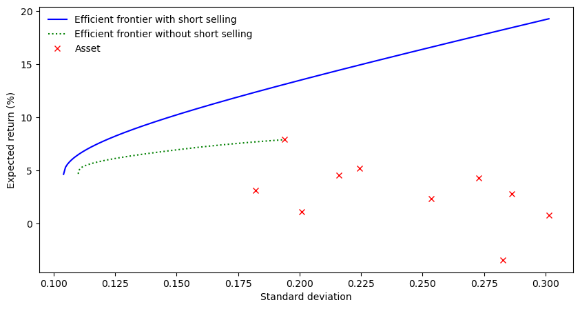

2 Grundlagen der klassischen (absoluten) Portfoliooptimierung
Gegenstand der Portfoliobildung bzw. Portfoliorealisierung ist die wertmäßige Aufteilung des Anlagebetrages auf die Assets des in Frage kommenden Anlageuniversums.
Bei der Portfoliobildung durch Anwendung von Optimierungsverfahren erfolgt die Bestimmung der optimalen Portfoliostruktur (Anteilsgewichte der Assets) in Bezug auf den jeweils verfolgten Zweck (operationalisiert durch eine Zielfunktion ZF) unter Beachtung eventueller Nebenbedingungen.
2.1 \((\mu-\sigma)\)-effiziente Portfolios ohne risikoloses Asset
Was sind optimale Portfolios und wie lassen sie sich bestimmen? Markowitz (1952, 1998) beschränkt zur Bewältigung dieses Problems seine Lösung darauf, dass aus der Menge aller möglichen und zulässigen Portfolios diejenigen ausgeschlosen werden, welche eindeutig schlechter sind als andere. Die verbleibenden sogenannten \((\mu-\sigma)\)-effizienten Portfolios bestimmen sich durch die Auswahl derjenigen Portfolios aus der Menge aller möglichen Portfolios, welche bei gegebenem Erwartungswert der Rendite \((\mu_{p})\) das minimale Risiko (Varianz bzw. Standardabweichung der Rendite - \(\sigma^2_{p}\) bzw. \(\sigma_{p}\)) aufweisen, oder bei gegebenem Risiko die maximale Rendite erwarten lassen. Diese Portfolios werden auch als dominant gegenüber den anderen Portfolios bezeichnet.
Diese Auswahl effizienter Portfolios basiert jedoch implizit auf zwei zentralen Annahmen:
- Investoren bevorzugen mehr Rendite gegenüber weniger.
- Weisen zwei Portfolios dieselbe erwartete Rendite auf, so wird dasjenige mit dem geringeren Risiko gewählt.
Damit unterstellt Markowitz implizit risikoaverse Anleger. Das Dominanzkriterium lässt sich also hier in folgender Weise formulieren:
Eine Anlage (Portfolio) dominiert eine andere, wenn sie
- bei gleicher Rendite ein geringeres Risiko aufweist, oder
- bei gleichem Risiko eine höhere Rendite besitzt.
Ein Portfolio wird genau dann effizient genannt, wenn kein anderes Portfolio existiert, welches
- bei gleicher erwarteter Rendite ein geringeres Risiko oder
- bei gleichem Risiko eine höhere erwartete Rendite oder
- bei höherer erwarteter Rendite gleichzeitig ein geringeres Risiko
besitzt. Damit ergibt sich unter Verwendung des Dominanzkriteriums die äquivalente Aussage:
- Ein Portfolio ist genau dann effizient, wenn kein anderes Portfolio existiert, welches dieses dominiert.
Die Menge aller effizienten Portfolios wird auch als Rand oder Kurve aller effizienten Portfolios oder kurz Effizienzkurve (“Efficient Frontier”) bezeichnet.
2.2 Analytische Bestimmung der Effizienzkurve
2.2.1 Allgemein (mit Leerverkaufsverbot)
Um die Effizienzkurve rechnerisch zu bestimmen, ist das folgende quadratische Optimierungsproblem (in Matrizenschreibweise) zu lösen:
\[ \begin{split} \\(OP1) \quad ZF(w) = \sigma_P^2=w^{T}\Sigma w \rightarrow \min_{w}!, \\ \text{unter den Nebenbedingungen}\quad & \text{(a)}\ w^{T}\mu = \mu_{P}, \\ & \text{(b)}\ w^{T}\iota = 1 \quad \text{(Budgetrestriktion)}, \\ & \text{(c)}\ w\geqq 0 \quad \text{(Leerverkaufsverbot)}, \end{split} \]
wobei
\[ w = \begin{bmatrix} w_1 \\ \vdots \\ w_N \end{bmatrix}, \quad \mu = \begin{bmatrix} \mu_1 \\ \vdots \\ \mu_N \end{bmatrix}, \quad \Sigma = \begin{bmatrix} \sigma_1^2 & \cdots & \sigma_{1N} \\ \vdots & \ddots & \vdots \\ \sigma_{N1} & \cdots & \sigma_N^2 \\ \end{bmatrix}. \]
- \(\mu_{P}\) : beliebige, fest vorgegebene Portfoliorendite
- \(\mu\) : Vektor der erwarteten Assetrenditen
- \(\Sigma\) : zukünftige Varianz-Kovarianzmatrix der Assetrenditen
- \(\iota\) : Einheitsvektor (alle Elemente des Vektors sind eins)
Für eine beliebige, fest vorgegebene Portfoliorendite \(\mu_{P}\) werden also die Gewichte \(w_{i}\) (\(i=1, ..., N\), und \(N=\) Anzahl der Assets im Anlageuniversum) derart bestimmt, dass das resultierende Portfoliorisiko (Varianz der Portfoliorendite) minimal wird. Die Lösung des Optimierungsproblems OP1 liefert einen Punkt \((\mu_{P}, \sigma^2_{p})\) der Effizienzkurve. Löst man nun das Optimierungsproblem für variierende \(\mu_{P}\), so lässt sich die Effizienzkurve punktweise konstruieren.
2.2.2 Diskussion der Nebenbedingungen
Als mögliche Nebenbedingungen wurden die Budgetrestriktion und die Nichtnegativitätsbedingung (Leerverkaufsverbot) eingeführt. Die Budgetrestriktion beinhaltet die Anforderung, dass die Summe der Einzelgewichte gleich eins ist. Der Investor kann also nicht mehr als den zur Verfügung stehenden Anlagebetrag auf die Anlagen aufteilen. Dies schließt die Aufnahme von Fremdkapital (Leverage) aus. Gleichzeitig wird aber auch die Vollinvestition gefordert. Ist eventuell eine Bargeldhaltung zu berücksichtigen, so ist Bargeld einfach als ein Asset mit erwarteter Rendite und Risiko von Null in das Anlageuniversum zu integrieren.
Die Möglichkeit von Leerverkäufen wird durch die Nichtnegativitätsanforderung an die Einzelgewichte ausgeschlossen. Dies ist eine in der Praxis übliche Beschränkung, die sich z.B. aufgrund eines gesetzlichen oder satzungsmäßigen Verbots von Leerverkäufen ergeben kann. Unter einem Leerverkauf versteht man den Verkauf eines Wertpapiers, welches sich nicht im Eigentum des Verkäufers befindet, sondern von ihm mittels Wertpapierleihe beschafft wird. Ein Leerverkäufer zielt darauf ab, unter Erwartung fallender Kurse, das Wertpapier später zu einem niedrigeren Kurs erwerben zu können, so dass die Differenz zwischen Kaufkurs und Verkaufkurs die zu entrichtende Leihgebühr überkompensiert.
Ferner kann es eine Vielzahl von weiteren Nebenbedingungen gesetzlicher, statutarischer oder persönlicher Art geben. Hierzu zählen z.B. Mindest- und Höchstbestandsgrenzen für einzelne Assets, zulässige Höchstbestandsgrenzen für Gruppen von Assets, eine geforderte Mindestdividendenrendite des Portfolios, Ausschluss bestimmter Assets (z.B. “Sin Stocks”), Beachtung von Nachhaltigkeitskriterien (z.B. ein Portfoliominimum-ESG-Score), Beschränkung des Umschichtungsvolumens, der Transaktionskosten usw.
Offensichtlich erschwert das Hinzufügen von (linearen und nichtlinearen) Nebenbedingungen die Lösungsfindung bei der Optimierung. Da bei einem Optimierungsproblem eine hochgradig nichtlineare Zielfunktion mit ebenfalls hochgradig komplexen, nichtlinearen Nebenbedingungen vorliegen kann, lässt sich schon intuitiv vermuten, dass kein gleichermaßen allgemein gültiges wie zugleich effizientes Lösungsverfahren existiert.
2.2.3 Sonderfall (ohne Leerverkaufsverbot)
2.2.3.1 Geschlossene Lösung
In der Regel lässt sich keine geschlossene Lösung des obigen Optimierungsproblems angeben. Entfällt aber die Nebenbedingung (c), das Leerverkaufsverbot (bzw. die Nichtnegativitätsbedingung), kann über einen Lagrangeansatz die folgende geschlossene Lösung für den optimalen (d.h., varianzminimalen) Portfoliogewichtsvektor \(w\) bei gegebener erwarteter Portfoliorendite \(\mu_{P}\) ermittelt werden (siehe z.B. Franzen und Schäfer, 2018, S. 182-189, für die Herleitung)
\[ w = \frac{C\mu_P-A}{D}\Sigma^{-1}\mu + \frac{B-A\mu_P}{D}\Sigma^{-1}\iota, \]
wobei
\[ A =\mu^{T}\Sigma^{-1}\iota,\ B=\mu^{T}\Sigma^{-1}\mu,\ C =\iota^{T}\Sigma^{-1}\iota,\ D = B C - A^2. \]
Die Beziehung zwischen der gegebenen Portfoliorendite \(\mu_P\) und dem dazugehörigen minimalen Portfoliorisiko \(\sigma_P\) läßt sich dann schreiben als:
\[ \sigma_P = \sqrt{\frac{C\mu_P^2 - 2A\mu_P + B}{D}} = \sqrt{\frac{C}{D}\left(\mu_P-\frac{A}{C}\right)^2+\frac1{C}}, \]
und für die \((\mu_P-\sigma_{P})\)-Effizienzkurve gilt
\[ (1) \quad \mu_P = \begin{cases} \displaystyle \frac{A + \sqrt{D(C\sigma_P^2 - 1)}}{C}, & \mu_P > \frac{A}{C}; \\ & \\ \displaystyle \frac{A - \sqrt{D(C\sigma_P^2 - 1)}}{C}, & \mu_P < \frac{A}{C}. \end{cases} \]
2.2.3.2 Two-Fund Theorem
Im \((\mu-\sigma)\)-Koordinatensystem stellen die varianzminimalen Portfolios, die für eine gegebene erwartete Rendite das Risiko (Varianz oder Standardabweichung der Rendite) minimieren, eine Parabel (Möglichkeitskurve - “Envelop”) dar. Der effiziente obere Rand der Parabel ist die Effizienzkurve. Der untere Rand (die “Ineffizienzkurve”) enthält ineffiziente Portfolios, die von den Portfolios des effizienten Rands dominiert werden (diese Portfolios besitzen für ein gegebenes \(\sigma_{p}\) jeweils ein größeres \(\mu_{p})\). Der Scheitelpunkt der Parabel, der den effizienten vom ineffizienten Rand trennt, ist das sogenannte Minimum-Varianz-Portfolio (siehe unten).
Wir können nun zwei Theoreme, die auf Black (1972) und Merton (1972) zurückgehen (siehe hierzu auch Benninga, 2014, Kapitel 9), verwenden, um mit Hilfe zweier beliebiger Basisportfolios auf der Parabel die gesamte Parabel aufzuspannen.
Das erste Theorem besagt, dass sich die Anteilsgewichte eines jeden Portfolios der Parabel beschreiben lassen durch:
\[ (2) \quad w(c)=\frac{\Sigma^{-1}(\mu-c \iota)}{\iota^T[\Sigma^{-1}(\mu-c\iota)]},\]
wobei \(c\) eine beliebige Konstante und \(\iota\) den Einheitsvektor der Dimension \(N\) darstellt. Durch Variation von \(c\) erhalten wir unterschiedliche Punkte auf der Parabel. Nun wählen wir zwei beliebige Basisportfolios \(X\) und \(Y\) auf der Parabel. Für \(X\) setzen wir z.B. \(c=2\) und für \(Y\) \(c=4\).
Das zweite Theorem besagt, gegeben zwei Basisportfolios \(X\) und \(Y\) auf der Parabel, jedes weitere Portfolio \(Z\) (Punkt auf der Parabel) lässt sich als konvexe Kombination von \(X\) und \(Y\) darstellen: \(Z=\alpha X+(1-\alpha)Y\), wobei \(\alpha\) eine beliebige Konstante ist. Daraus folgt für die erwartete Rendite und das Risiko von \(Z\):
\[(3a) \quad \mu_{Z} = \alpha \mu_{X} + (1-\alpha) \mu_{Y} \]
\[(3b) \quad \sigma_{Z}=\sqrt{\alpha^2 \sigma^2_{X} + (1-\alpha^2) \sigma^2_{Y}+ 2\alpha (1-\alpha)Cov(X,Y)} \]
\(Cov(X,Y)\) bezeichnet hier die Renditekovarianz zwischen den beiden Basisportfolios.
Die Bestimmung der Parabel der varianzminimalen Portfolios (effizienter + ineffizienter Rand) anhand des Two-Fund Theorems erfordert somit die folgenden Schritte:
- Wahl der Basisportfolios \(X\) und \(Y\) durch die Festlegung zweier beliebiger Werte für \(c\).
- Bestimmung der Anteilsgewichte von \(X\) und \(Y\) anhand Gleichung (2).
- Ermittlung der erwarteten Rendite, Varianz der Rendite und der Renditekovarianz zwischen \(X\) und \(Y\).
- Für eine große Zahl unterschiedlicher Werte für \(\alpha\): Berechnung der erwarteten Rendite und der Renditevarianz für \(Z\) gemäß der Gleichungen (3a) und (3b).
2.3 Zwei extreme optimale Portfolios: MVP und MEP
Die Effizienzkurve optimaler, d.h. \((\mu-\sigma)\)-effizienter, Portfolios wird begrenzt von zwei Extrempositionen, dem Minimum-Varianz-Portfolio (MVP) und dem Maximum-Ertrag-Portfolio (MEP).
Das MVP ist dasjenige Portfolio, welches das global geringste zu erwartende Risiko aufweist. Das Optimierungsproblem (in Matrizenschreibweise) lautet: \[ \begin{split} \\(OP2) \quad ZF(w) = \sigma_P^2=w^{T}\Sigma w \rightarrow \min_{w}!, \\ \text{unter den Nebenbedingungen}\quad & \text{(a)}\ w^{T}\iota = 1 \quad \text{(Budgetrestriktion)}, \\ & \text{(b)}\ w\geqq 0 \quad \text{(Leerverkaufsverbot)}, \end{split} \]
Für das am anderen Ende der Effizienzkurve liegende MEP gilt:
\[ (OP3) \quad ZF(w) = \mu_{P}=w^{T}\mu \rightarrow \max_{w}! \]
Die obigen Nebenbedingungen gelten hier analog. Für das MEP bildet das Portfolio folglich die Lösung, welches zu 100% aus dem Asset mit der höchsten zu erwartenden Rendite besteht.
2.4 Einführung eines risikolosen Assets
Das Problem der Bestimmung aller effizienten Portfolios kann unter Anwendung der Tobin-Separation vereinfacht werden. Diese ermöglicht es, durch Einführung einer risikofreien Anlage, nur noch ein effizientes Portfolio bestimmen zu müssen. Die Einführung einer risikolosen Anlagemöglichkeit mit Zinssatz \(r_{f}\) führt zu einem modifizierten Problem: Der Anleger hat nun die Möglichkeit, Mischportfolios aus der risikolosen Anlagemöglichkeit und einem beliebigen Portfolio auf der Effizienzkurve zu bilden, z.B. mit dem Portfolio P. Die sich dann ergebenden \((\mu-\sigma)\)-Kombinationen für variierende Mischungsverhältnisse von \(r_{f}\) und P liegen auf einer Geraden. Ziel ist es nun, dasjenige Portfolio TP auf der Effizienzkurve für die Mischung mit \(r_{f}\) zu verwenden, für dass die resultierenden Mischportfolios nicht durch Kombinationen von \(r_{f}\) mit anderen effizienten Portfolios P dominiert werden.
Das Portfolio TP wird dabei in folgenden Weise bestimmt:
\[ \begin{split} \\(OP4) \quad ZF(w) = \frac{\mu_p-r_f}{\sigma_p} \rightarrow \max_{w}!, \\ \text{unter den Nebenbedingungen}\quad & \text{(a)}\ w^{T}\iota = 1 \quad \text{(Budgetrestriktion)}, \\ & \text{(b)}\ w\geqq 0 \quad \text{(Leerverkaufsverbot)}, \end{split} \]
Das obige Optimierungsproblem OP4 entspricht der Maximierung der Steigung der Geraden durch den Punkt \(r_{f}\) einerseits und durch einen durch ein effizientes Portfolio bestimmten Punkt andererseits. Dies ist gleichbedeutend mit der Bestimmung der Tangente an die Effizienzkurve ausgehend vom Punkt \(r_{f}\). Der Ausdruck \(\frac{\mu_p-r_f}{\sigma_p}\) wird auch als die Sharpe-Ratio des Portfolios \(P\) bezeichnet.
Die sich für den risikoaversen Investor neu ergebende Effizienzline wird durch alle möglichen Kombinationen aus dem Tangentialportfolio TP und der risikofreien Anlage \(r_{f}\) gebildet. Für dieses Mischportfolio ergeben sich die erwartete Rendite und dessen Risiko wie folgt:
\[ \begin{split} \ \mu_{Misch}=\alpha\mu_{TP}+(1-\alpha)r_{f} \ \text{und}\ \ \sigma_{Misch}=\alpha \sigma_{TP}, \ \end{split} \]
mit \(\alpha=\) Anteil der Investitionssumme, der in das risikobehaftete Portfolio TP investiert wird.
2.5 Bestimmung des anlegerindividuell-optimalen Portfolios
Mit der Bestimmung der effizienten Portfolios ist man aber noch nicht am Ziel. Gewünscht ist schlussendlich die Bestimmung eines für den individuellen Anleger optimalen Portfolios (Poddig et al., S. 84).
Im Rahmen der absoluten Optimierung werden wir die Bestimmung anlegerindividuell-optimaler Portfolios hier nicht behandeln. Wir fokussieren in der folgenden Fallstudie ausschließlich auf die Ermittlung der vollständigen Effizienzkurve. Für die Bestimmung anlegerindividuell-optimaler Portfolios sei auf die nachfolgenden Kapitel verwiesen.
2.6 Beginn der Fallstudie
Wir starten mit dem Import der benötigten Pakete.
2.6.1 Anmerkungen zur Umsetzung der numerischen Optimierung in Python
Wir setzen im Folgenden die numerische Optimierung der jeweils formulierten Zielfunktion (OP1-OP4) unter Nebenbedingungen mit Hilfe der Funktion minimize aus dem Modul scipy.optimize um. Bei der Umsetzung sind einige Besonderheiten zu beachten.
Erstens bietet Scipy eine “Minimieren”-Funktionalität, aber keine “Maximieren”-Funktion. Möchten wir beispielsweise die Sharpe-Ratio im Optimierungsproblem 4 (OP4) maximieren, mag dies auf den ersten Blick wie ein kleines Problem erscheinen, aber es lässt sich leicht lösen, wenn man bedenkt, dass die Maximierung der Sharpe-Ratio analog zur Minimierung der negativen Sharpe-Ratio ist - also buchstäblich nur der Sharpe-Ratio-Wert mit einem vorangestellten Minuszeichen.
Das grundsätzliche Vorgehen bei der Optimierung ist immer identisch: Zuerst schreiben wir die zu optimierende Zielfunktion als Funktion und definieren dann über das Objekt constraints die Struktur der Nebenbedingungen.
Lassen Sie uns die einzelnen Einträge durchgehen, um sie besser zu verstehen:
Da wir die SLSQP-Methode in unserer “Minimieren”-Funktion verwenden werden (was für “Sequential Least Squares Programming” steht), muss das constraints Objekt das Format eines Tupels von Dictionaries haben, das die Felder type und fun mit den optionalen Feldern jac und args enthält. Wir brauchen nur die Felder type, fun und args. Ein Tupel ist eine unveränderliche Sequenz fester Länge aus Python-Objekten, eingebettet in runde Klammern () wobei die einzelnen Objekte kommasepariert sind.
Der type kann entweder eq oder ineq sein, was sich auf equality bzw. inequality bezieht. Das fun bezieht sich auf die Funktion, die die Beschränkung definiert, in unserem Fall die Beschränkung, dass die Summe der Anteilsgewichte Eins sein muss (Budgetrestriktion). Die Art und Weise, wie dies eingegeben werden muss, ist etwas umständlich. Das eq bedeutet, dass wir nach einer Funktion suchen, deren Ausgabewert gleich Null ist (das ist es, worauf sich die Gleichheit bezieht - Gleichheit mit Null). Der einfachste Weg, dies zu erreichen, besteht darin, eine Lambda-Funktion zu erstellen, die die Summe der Portfoliogewichte minus Eins liefert. Die Beschränkung, dass der Ausgabewert dieser Funktion gleich Null sein muss, bedeutet per Definition, dass die Gewichte zu Eins summiert werden müssen.
Über das Tuple bounds, das \(N\) identische bound=(Mindestbestandsgrenze, Höchstbestandsgrenze) Tuple enthält, legen wir fest, dass jedes einzelne Anteilsgewicht zwischen Null und Eins liegen muss (Leerverkaufsverbot). Die args sind die Argumente, die wir an die Funktion übergeben wollen, die wir zu minimieren versuchen (Zielfunktion) - das sind alle Argumente AUßER dem Anteilsvektor, der natürlich das Zielfunktionsargument ist, das wir zur Optimierung der ZF-Ausgabe ändern.
Über die Liste Startgewichte legen wir den Ausgangspunkt für die numerische Suche nach den optimalen Gewichten fest. Der grundlegende Code für die Anwendung der minimize-Optimierungsfunktion sieht demnach folgendermaßen aus:
minimize liefert als Ausgabe das Array x mit den optimierten Anteilsgewichten.
2.6.2 Laden und Beschreiben der Datenbasis
Das beispielhafte Anlageuniversum der Fallstudie umfasst zehn Unternehmen aus den folgenden Branchen: Technologie, Gesundheit, Nahrungsmittel, Pharma, Energie sowie Luft- und Raumfahrt. Die Unternehmen sind: Abbott Laboratories (ABT), Boeing Industries (BA), Costco Wholesale (COST), Cisco Systems (CSCO), IBM (IBM), Intel (INTC), Merk (MRK), Microsoft (MSFT), AT&T (T), und Exxon Mobil Corporation (XOM).
Die Datengrundlage stellen Monatsanfangskurse (“Adjusted Close”) über einen 5-Jahres-Zeitraum vom 1.12.2004 bis zum 1.12.2009 dar. Die Stichprobe enthält somit 61 Zeitreihenbeobachtungen.
| ABT | BA | COST | CSCO | IBM | INTC | MRK | MSFT | T | XOM | |
|---|---|---|---|---|---|---|---|---|---|---|
| 2004-12-01 | 46.65 | 51.77 | 48.41 | 19.32 | 98.58 | 23.39 | 32.14 | 26.72 | 25.77 | 51.26 |
| 2005-01-03 | 45.02 | 50.60 | 47.27 | 18.04 | 93.42 | 22.45 | 28.05 | 26.28 | 23.76 | 51.60 |
| 2005-02-01 | 45.99 | 54.97 | 46.59 | 17.42 | 92.58 | 23.99 | 31.70 | 25.16 | 24.06 | 63.31 |
| 2005-03-01 | 46.62 | 58.46 | 44.18 | 17.89 | 91.38 | 23.23 | 32.37 | 24.17 | 23.69 | 59.60 |
| 2005-04-01 | 49.16 | 59.52 | 40.63 | 17.27 | 76.38 | 23.52 | 33.90 | 25.30 | 23.80 | 57.03 |
2.6.3 Schätzung der Inputdaten für die Optimierung
Alle oben formulierten Optimierungsprobleme benötigen als Ausgangsdaten den Vektor der erwarteten, zukünftigen Assetrenditen \(\mu\) und die zukünftige Varianz-Kovarianzmatrix \(\Sigma\). Unterschiedliche Methode stehen zur Schätzung dieser Parameter zur Verfügung.
Die denkbar einfachste Vorgehensweise besteht darin, anhand einer beobachteten Renditereihe ihren historischen Mittelwert und empirische Varianz als Schätzer für den Erwartungswert der Rendite und die zukünftige Varianz zu ermitteln. In gleicher Weise kann man die empirische Kovarianz zweier Renditereihen als Schätzer der zukünftigen Kovarianz berechnen. Diese Vorgehensweise wird auch als einfache historisch basierte Schätzung bezeichnet. Sie wird im Folgenden wegen ihrer leichten Umsetzbarkeit und Anschaulichkeit als Verfahren zur Rendite- bzw. Risikoprognose eingesetzt, obwohl die damit erzielbaren Ergebnisse im Regelfall eher schlecht sind. Die Verwendung begründet sich hier ausschließlich mit der didaktischen Zielsetzung, die verschiedenen Verfahren der Portfoliooptimierung verfahrenstechnisch zu demonstrieren, wofür zwar Prognosen benötigt werden, deren Güte aber für den hier verfolgten Zweck keine Rolle spielt.
Poddig et al. (2009, S. 116-121) geben einen Überblick über komplexere Methoden zur Prognose von Renditen und Risiken.
Wir berechnen zunächst diskrete Monatsrenditen über frame.pct_change(), erhöhen diese um Eins und berechnen davon den Logarithmus (über die Funktion log1p) um stetige (Log-) Renditen zu erhalten. Hierauf wenden wir die Schätzung an und übertragen die historisch geschätzen (und annualiserten) Mittelwerte und die empirische Varianz-Kovarianzmatrix in die Arrays means und Sigma.
2.6.4 Anwendung der absoluten Portfoliooptimierung
2.6.4.1 Berechnung des Minimum-Varianz-Portfolios (MVP)
2.6.4.1.1 Ohne Leerverkaufsverbot
Wir beginnen mit der Formulierung der Zielfunktion des Optimierungsproblems OP2 in der Funktion calculate_portfolio_var. Über matrix(w) transformieren wir das Array w in einen Zeilenvektor der Dimension \(1xN\).
Für die Startgewichte der Optimierung verwenden wir ein gleichgewichtetes Portfolio. Durch Aufruf von np.tile(A,x) wird ein Array generiert, welches x-Mal den Wert A enthält. Die Anzahl der Assets in unserem Beispieluniversum erhalten wir über means.shape[0].
Nun sind wir bereit für die Optimierung, die optimierten Anteilsgewichte speichern wir im Array Weight_MV1. Durch setzen von options={'disp': True} werden allgemeine Informationen zum Ablauf der Optimierung angezeigt, und tol legt die Genauigkeit der gefundenen Lösung fest.
Code
Optimization terminated successfully (Exit mode 0)
Current function value: 0.010828658442158556
Iterations: 31
Function evaluations: 341
Gradient evaluations: 31Aus Gründen der besseren Übersicht transformieren wir Weight_MV1 in ein DataFrame.
| ABT | BA | COST | CSCO | IBM | INTC | MRK | MSFT | T | XOM | |
|---|---|---|---|---|---|---|---|---|---|---|
| 0 | 0.4359 | -0.0418 | 0.2083 | -0.0125 | 0.141 | 0.0902 | -0.1451 | -0.0239 | 0.0445 | 0.3035 |
Positive Gewichte stellen Long-Positionen und negative Gewichte Short-Positionen dar. Assets mit negativen Gewichten werden somit leerverkauft.
2.6.4.1.2 Leerverkaufsverbot
Wir implementieren nun die Beschränkung auf positive Gewichte über eine Liste von zehn (0, 1)-Tuplen.
Code
# positive weight portfolio
bnd=[(0, 1),(0, 1),(0, 1),(0, 1),(0, 1),
(0, 1),(0, 1),(0, 1),(0, 1),(0, 1)] # only positive weights
cons = ({'type': 'eq', 'fun': lambda x: np.sum(x)-1.0})
res2= minimize(calculate_portfolio_var, Weight_1N, args=Sigma,
bounds = bnd, method='SLSQP',constraints=cons,tol=1e-10,
options={'disp': True})
Weight_MV2 = res2.xOptimization terminated successfully (Exit mode 0)
Current function value: 0.012112846573987465
Iterations: 21
Function evaluations: 231
Gradient evaluations: 21| ABT | BA | COST | CSCO | IBM | INTC | MRK | MSFT | T | XOM | |
|---|---|---|---|---|---|---|---|---|---|---|
| 0 | 0.3617 | 0.0 | 0.1652 | 0.0 | 0.1621 | 0.0137 | 0.0 | 0.0 | 0.0523 | 0.2449 |
In der gefundenen Lösung fällt auf, das vier der zehn Aktien nicht im optimierten Portfolio enthalten sind und mehr als 60% des Portfolios auf die beiden Aktien ABT und XOM entfällt. Um ein stärker diversifiziertes Portfolio zu konstruieren, wird bei der Berechnung eines dritten MVP eine zusätzliche Nebenbedingung eingeführt. Die einzelnen Assets sollen mindestens mit einem Anteilsgewicht von 5%, aber maximal mit einem Höchstanteil von 35% im Portfolio enthalten sein.
2.6.4.1.3 Zusätzliche Nebenbedingung: Bestandsgrenzen (min=5%, max=35%)
Code
# position constraints
bnd=[(0.05, 0.35),(0.05, 0.35),(0.05, 0.35),(0.05, 0.35),(0.05, 0.35),
(0.05, 0.35),(0.05, 0.35),(0.05, 0.35),(0.05, 0.35),(0.05, 0.35)]
cons = ({'type': 'eq', 'fun': lambda x: np.sum(x)-1.0})
res3= minimize(calculate_portfolio_var, Weight_1N, args=Sigma,
bounds = bnd, method='SLSQP',constraints=cons,tol=1e-10,
options={'disp': True})
Weight_MV3 = res3.xOptimization terminated successfully (Exit mode 0)
Current function value: 0.014612315837805704
Iterations: 18
Function evaluations: 198
Gradient evaluations: 182.6.4.2 Berechnung des Maximum-Ertrag-Portfolios (MEP) mit Leerverkaufsverbot
Wir beginnen wieder mit der Formulierung der Zielfunktion des Optimierungsproblems OP3 in der Funktion calculate_negative_portfolio_ret. Beachte: Minimieren der mit -1 multiplizierten erwarteten Portfoliorendite ist äquivalent zur Renditemaximierung.
Code
# positive weight portfolio
bnd=[(0, 1),(0, 1),(0, 1),(0, 1),(0, 1),
(0, 1),(0, 1),(0, 1),(0, 1),(0, 1)] # only positive weights
cons = ({'type': 'eq', 'fun': lambda x: np.sum(x)-1.0})
res4= minimize(calculate_negative_portfolio_ret, Weight_1N, args=means,
bounds = bnd, method='SLSQP',constraints=cons,tol=1e-10,
options={'disp': True})
Weight_MRP = res4.xOptimization terminated successfully (Exit mode 0)
Current function value: -7.886975933686317
Iterations: 2
Function evaluations: 22
Gradient evaluations: 2| ABT | BA | COST | CSCO | IBM | INTC | MRK | MSFT | T | XOM | |
|---|---|---|---|---|---|---|---|---|---|---|
| 0 | 0.0 | 0.0 | 0.0 | 0.0 | 0.0 | 0.0 | 0.0 | 0.0 | 0.0 | 1.0 |
Das Portfolio ist zu 100% investiert in XOM, der Aktie mit der höchsten mittleren Rendite im Datensatz. Um ein breiter diversifiziertes Portfolio zu erhalten könnten wir wieder Bestandsgrenzen als zusätzliche Nebenbedingung einführen.
2.6.4.3 Berechnung eines Punktes der Effizienzkurve mit Leerverkaufsverbot
Wir bestimmen nun einen Punkt der Effizienzkurve in dem wir im Optimierungsproblem OP1 die Zielrendite \(\mu_P\) z.B. auf 6% setzen. Wir implementieren diese zusätzliche Nebenbedingung in zwei Schritten. Zunächst schreiben wir die Funktion calculate_portfolio_ret, die die erwartete Portfoliorendite berechnet. Dann fügen wir diese Funktion als Lambda-Funktion in das Tuple cons der Nebenbedingungs-Dictionaries.
Code
# definition of function for portfolio expected return
def calculate_portfolio_ret(w,means):
w = np.matrix(w) # w is a row (not column!) vector
means = np.matrix(means)
return (w*means.T)[0,0]
# positive weight portfolio
bnd=[(0, 1),(0, 1),(0, 1),(0, 1),(0, 1),
(0, 1),(0, 1),(0, 1),(0, 1),(0, 1)] # only positive weights
cons = ({'type': 'eq', 'fun': lambda x: np.sum(x)-1.0},
{'type': 'eq', 'fun': lambda x: calculate_portfolio_ret(x,means)-6.0})
res4= minimize(calculate_portfolio_var, Weight_1N, args=Sigma,
bounds = bnd, method='SLSQP',constraints=cons,tol=1e-10,
options={'disp': True})
Weight_tar6 = res4.xOptimization terminated successfully (Exit mode 0)
Current function value: 0.0149725199855123
Iterations: 13
Function evaluations: 143
Gradient evaluations: 13Wir überprüfen kurz ob die optimierten Portfoliogewichte wirklich zu einer erwarteten Portfoliorendite von 6% führen.
2.6.4.4 Berechnung der vollständigen Effizienkurve mit Leerverkaufsverbot
Zunächst berechnen wir das Intervall der erwarteten Renditen aller Portfolios auf der Effizienzkurve. Dies ist gleichbedeutend mit dem Intervall der Zielrenditen im Optimierungsproblem OP1. Hierbei gilt: Minimum Zielrendite = Rendite des MVP, und Maximum Zielrendite = Rendite der MEP.
Über np.linspace generieren wir nun das Array V_Target mit 45 gleichmäßig verteilten Zielrenditen zwischen den oben definierten Minimum und Maximum. Wir definieren die Arrays V_Risk und V_Return in denen wir später die aus der Optimierung resultierenden \(\sigma_P\) und \(\mu_P\) speichern. Zudem definieren wir die Matrix V_Weight der Dimension 45x10. In den Zeilen dieser Matrix speichern wir die zehn Anteilsgewichte der zehn Assets für die 45 optimierten Portfolios (eins für jede Zielrendite).
Nun iterieren wir über eine for-Schleife durch das Array der Zielrenditen. Wir verwenden enumerate um den Iterationsindex (hier als idx bezeichnet) bei den Iterationen “mitzunehmen” und damit die Positionen in den Ergebnis-Arrays bzw. der Gewichtsmatrix zu indexieren.
Code
V_Target = np.linspace(min, max, num=45)
V_Risk = np.zeros(V_Target.shape)
V_Return = np.zeros(V_Target.shape)
V_Weight = np.zeros((V_Target.shape[0], means.shape[0]))
for idx, Target_Return in enumerate(V_Target):
cons = ({'type': 'eq', 'fun': lambda x: np.sum(x)-1.0},
{'type': 'eq', 'fun': lambda x: calculate_portfolio_ret(x,means)-Target_Return})
res= minimize(calculate_portfolio_var, Weight_1N, args=Sigma,
bounds = bnd, method='SLSQP',constraints=cons,tol=1e-10)
V_Weight[idx, :] = res.x.T
V_Return[idx] = calculate_portfolio_ret(res.x,means)
V_Risk[idx] = np.sqrt(calculate_portfolio_var(res.x, Sigma))Wir plotten die resultierende Effizienkurve und die Positionen der zehn Assets.
Code
fig1 = plt.figure(num=1, facecolor='w', figsize=(10, 5))
plt.plot(V_Risk, V_Target, 'g:', label='Efficient frontier without short selling')
plt.plot(np.sqrt(np.diagonal(Sigma)), means, 'rx', label='Asset')
plt.legend(loc='best', frameon=False)
plt.xlabel('Standard deviation')
plt.ylabel('Expected return (%)')
plt.show()
Hier plotten wir die optimalen Anteilsgewichte für die 45 Zielrenditen.
Code
fig2 = plt.figure(num=2, facecolor='w', figsize=(10, 5))
plt.stackplot(V_Target, V_Weight.T*100)
# colors=tuple([tuple(gray*np.ones(3)) for gray in np.linspace(0.4, 0.8, num=means.shape[0])]))
plt.axis([min, max, 0.0, 100.0])
plt.legend(list(frame.columns),
loc='upper left', bbox_to_anchor=(1.0, 1.0), frameon=False)
plt.xlabel('Target expected return (%)')
plt.ylabel('Allocation weight (%)')
plt.show()
2.6.4.5 Berechnung der vollständigen Effizienzkurve ohne Leerverkaufsverbot
Im Sonderfall ohne Leerverkaufsverbot (und nur Gültigkeit der Budgetrestriktion) kann die Parabel varianzminimaler Portfolios auch ohne numerische Optimierung über eine geschlossene Lösung ermittelt werden (siehe oben Kapitel 2.2.3). Wir berechnen nun die Parabel über Gleichung (1).
Hierfür benötigen wir das NumPy Module numpy.linalg für Lineare Algebra, dass wir oben als la importiert hatten. Wichtig: In Sonderfall ohne Leerverkaufsverbot gilt für die Varianz des MVP: \(\sigma^2_{MVP}=\frac{1}{C}\), wobei \(C=\iota^{T}\Sigma^{-1}\iota\) (siehe zur Herleitung z.B. Franzen und Schäfer, 2018, S. 189).
inv bezeichnet die Funktion zur Berechnung der Inversen einer Matrix, und @ ist der Operator für Matrixmultiplikationen. Wichtig: Beachten Sie, dass in Python @ anwendbar ist, solange die Länge eines Vektors mit der Länge der entsprechenden Zeile/Spalte einer Matrix übereinstimmt. Wir müssen also den Transponierungsoperator T nicht auf means oder iota anwenden.
Zunächst generieren wir den Einheitsvektor der Dimension \(N\) und extrahieren die Standardabweichungen der Assets.
Dann berechnen wir die Inverse der Varianz-Kovarianzmatrix und die vier Komponenten A, B, C, und D der Gleichung (1).
Wir speichern die Standardabweichung des MVP als sigma_gmv. Diese dient als Minimum der \(\sigma_P\)’s für die wir die beiden (effizienten und ineffizienten) \(\mu_P\)’s gemäß Gleichung (1) berechnen. Das Maximum der \(\sigma_P\)’s legen wir in Form der maximalen Standardabweichung (np.max(Stdev)) unter allen Assets fest. Für 250 gleichmäßig verteilte \(\sigma_P\)’s innerhalb dieser Grenzen berechnen wir den effizienten und ineffizienten Bereich der Parabel varianzminimaler Portfolios (in den beiden Arrays mu_p_efficient und mu_p_inefficient) .
Abschließend plotten wir die Effizienzkurve mit und ohne Leerverkaufsverbot gemeinsam in einem Graph.
Code
fig2 = plt.figure(num=1, facecolor='w', figsize=(10, 5))
plt.plot(sigma_p, mu_p_efficient, 'b-', label='Efficient frontier with short selling')
plt.plot(V_Risk, V_Target, 'g:', label='Efficient frontier without short selling')
plt.plot(np.sqrt(np.diagonal(Sigma)), means, 'rx', label='Asset')
plt.legend(loc='best', frameon=False)
plt.xlabel('Standard deviation')
plt.ylabel('Expected return (%)')
plt.show()
Wir erwartet liegt die Effizienzkurve ohne Leerverkaufsverbot oberhalb derjenigen mit Leerverkaufsverbot. Zusätzliche Nebenbedingungen schränken den Lösungsraum optimaler Portfolios immer weiter ein.
2.6.4.6 Berechnung der Effizienzkurve auf Basis des Two-Fund Theorems
Wichtig: Dieser Ansatz ist nur gültig wenn Leerverkäufe erlaubt sind!
Im ersten Schritt ermitteln wir die Gewichte (port1 und port2) von zwei Basisportfolios \(X\) und \(Y\) gemäß Gleichung (2) oben. Wir wählen die Werte 2.0 und 4.0 für die Konstante \(c\).
Für beide Portfolios berechnen wir die erwartete Rendite, Varianz der Rendite, und die Renditekovarianz zwischen \(X\) und \(Y\).
Beachten Sie: die Renditekovarianz ist gegeben durch \(Cov(X,Y)=w^{T}_X\Sigma w_Y\)
Code
# use 2.0 and 4.0 as constant values
# calculate the two basis portfolios 1 and 2
port1 = (inv_Sigma*np.matrix(means-2.0).T)/np.sum(inv_Sigma*np.matrix(means-2.0).T)
port2 = (inv_Sigma*np.matrix(means-4.0).T)/np.sum(inv_Sigma*np.matrix(means-4.0).T)
covariance=(port1.T*Sigma*port2)[0,0]
ret1 = (np.matrix(means) * port1)[0,0]
ret2 = (np.matrix(means) * port2)[0,0]
var1 = (port1.T*Sigma*port1)[0,0]
var2 = (port2.T*Sigma*port2)[0,0]Danach berechnen wir gemäß der Formeln (3a) und (3b) die erwartete Rendite und die Renditevarianz für ein Portfolio \(Z=\alpha X+(1-\alpha)Y\). Über np.linspace wählen wir dabei 250 gleichmäßig verteilte Werte für \(\alpha\) zwischen 0 und 1.5. Die resultierende erwartete Rendite und das Risiko der 250 \(Z\)-Portfolios speichern wir dann in den Arrays Risk und Return. Wir verwenden wieder die enumerate Funktion um die Arrays zu indexieren.
Code
# construction of portfolios from the two basis portfolios for
# different weights w
weight = np.linspace(0, 1.5, num=250)
Risk = np.zeros(weight.shape)
Return = np.zeros(weight.shape)
for idx, w in enumerate(weight):
Return[idx] = w*ret1 + (1-w)*ret2
Risk[idx] = np.sqrt(w**2 * var1 + (1-w)**2 * var2 + 2*w*(1-w)*covariance)
Final plotten wir die sich ergebende Effizienzkurve zusammen mit der oben numerisch bestimmten Kurve für den Fall dass Leerverkäufe unzulässig sind.
Code
fig3 = plt.figure(num=1, facecolor='w', figsize=(10, 5))
plt.plot(Risk, Return, 'b-', label='Efficient frontier with short selling')
plt.plot(V_Risk, V_Target, 'g:', label='Efficient frontier without short selling')
plt.plot(np.sqrt(np.diagonal(Sigma)), means, 'rx', label='Asset')
plt.legend(loc='best', frameon=False)
plt.xlabel('Standard deviation')
plt.ylabel('Expected return (%)')
plt.show()
2.6.4.7 Bestimmung des Tangentialportfolios (TP) mit Leerverkaufsverbot
Wie schon oben geschildert, ergibt sich unter der Annahme der Existenz einer risikofreien Anlage eine neue Effizienzline. Die Bestimmung des Tangentialportfolios TP (das Portfolio mit der maximalen Sharpe-Ratio) beinhaltet die Frage: Welches Portfolio maximiert die Überschussrendite (über den risikolosen Zins hinaus) relativ zum Portfoliorisiko?
Die Zielfunktion des Optimierungsproblems OP4 implementieren wir in der Funktion calc_neg_sharpe. Diese Funktion erfordert als Eingabe \(w\), \(\mu\), \(\Sigma\), \(r_f\) und die Zeitfrequenz freq der Renditebeobachtungen. Liegen beispielsweise monatliche Renditen vor, ist freq=12. Um als Ausgabe der Funktion die (negative) annualisierte Sharpe-Ratio zu erhalten, wird die erwartete Portfoliorendite (portfolio_return) mit freq multipliziert, und die Standardabweichung der Rendite (portfolio_std) mit der Wurzel aus freq. \(r_f\) sollte als Jahreszins angegeben werden. Die Annualisierung entfällt natürlich (und freq ist auf den Wert Eins zu setzen) falls die Schätzungen von \(\mu\) und \(\Sigma\) bereits annualisiert wurden (wie in unserem Fall oben).
Beachten Sie, dass die Portfoliovarianz in Matrizenschreibweise durch \(\sigma_P^2=w^{T}\Sigma w\) gegeben ist. In der Funktion führen wir die Matrizenmultiplikation zweimal hintereinander über np.dot durch.
Code
# definition of target function for maximum Sharpe portfolio
# "freq" denotes the return frequency (daily=252, monthly=12, annual=1, etc.)
def calc_neg_sharpe(weights, mean_returns, cov, rf, freq):
portfolio_return = np.sum(mean_returns * weights) * freq
portfolio_std = np.sqrt(np.dot(weights.T, np.dot(cov, weights))) * np.sqrt(freq)
sharpe_ratio = (portfolio_return - rf) / portfolio_std
return -sharpe_ratioDas vollständige Optimierungsproblem schreiben wir in die Funktion max_sharpe_ratio. Es gilt hier zwei Besonderheiten zu beachten:
- Das Tuple
boundsmit den identischen Positionsgrenzen für alle Assets generieren wir elegant über eine for-Schleife. - Das gleichgewichtete Portfolio als Startlösung erzeugen wir als Liste durch
num_assets*[1./num_assets,].
Code
# function that implements the Sharpe portfolio optimization
def max_sharpe_ratio(mean_returns, cov, rf, freq):
num_assets = len(mean_returns)
args = (mean_returns, cov, rf, freq)
constraints = ({'type': 'eq', 'fun': lambda x: np.sum(x) - 1})
bound = (0.0,1.0)
bounds = tuple(bound for asset in range(num_assets))
result = minimize(calc_neg_sharpe, num_assets*[1./num_assets,], args=args,
method='SLSQP', bounds=bounds, constraints=constraints,tol=1e-10)
return resultFür einen jährlichen risikolosen Zins von 3% berechnen für nun für unser Beispiel-Anlageuniversum die Gewichte des Tangentialportfolios.
| ABT | BA | COST | CSCO | IBM | INTC | MRK | MSFT | T | XOM | |
|---|---|---|---|---|---|---|---|---|---|---|
| 0 | 0.0 | 0.0 | 0.0979 | 0.0 | 0.1474 | 0.0 | 0.0 | 0.0 | 0.0 | 0.7547 |
Augenscheinlich besteht des Tangentialportfolio zu 75% aus XOM. Ein breiter diversifiziertes Portfolio würde Bestandshöchstgrenzen (z.B. 35%) erfordern.
2.7 Lernvideos
2.7.1 Video Teil 1

2.7.2 Video Teil 2

2.8 Literatur
Benninga, S., (2014). Financial Modeling, 4. Auflage, MIT Press, London.
Franzen, D., Schäfer, K. (2018). Assetmanagement, 1. Auflage, Schäffer-Poeschel, Stuttgart.
Poddig, T., Brinkmann, U., Seiler, K. (2009). Portfolio Management: Konzepte und Strategien, 2. Auflage, Uhlenbruch Verlag, Wiesbaden.